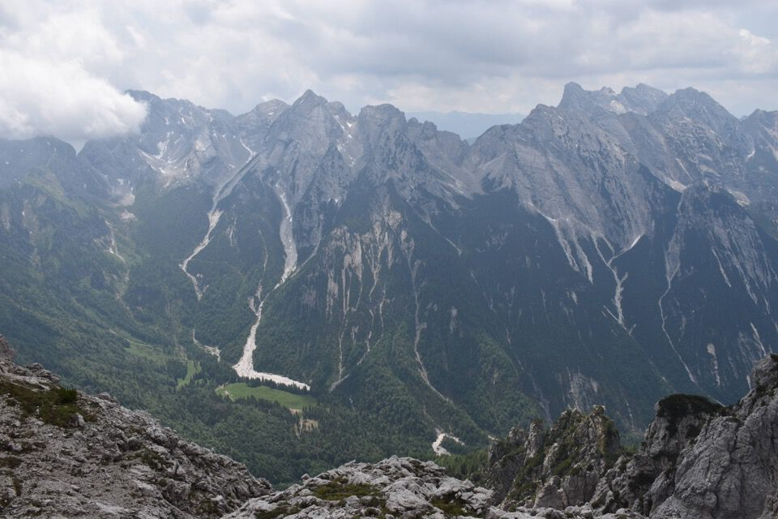
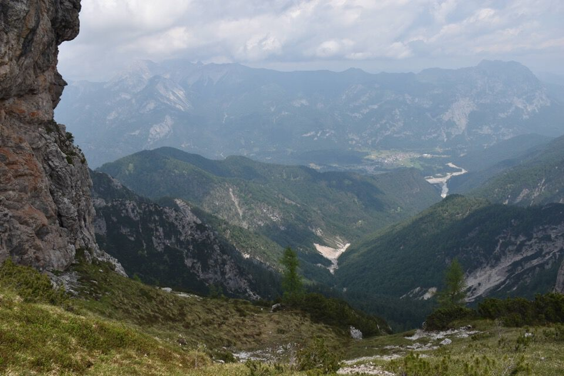
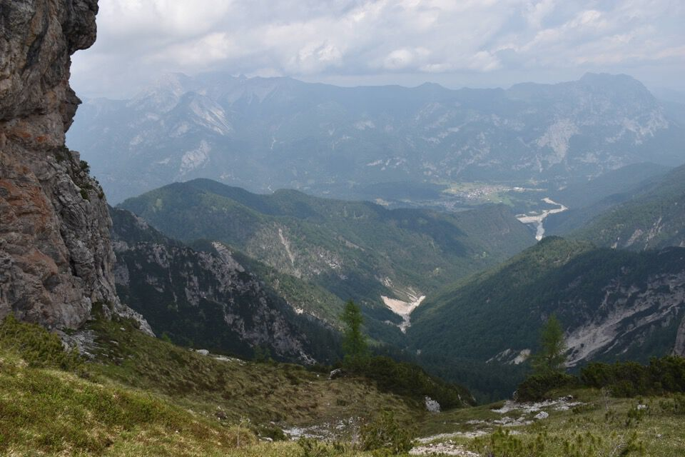

Bell'anello con partenza dal rif. Pussa.
Con il fin troppo rilassante sentiero 364 ci portiamo in val Libertàn, che iniziamo a risalire puntando alla forcella.
L'ambiente è inaspettatamente affascinante e severo con le alte pareti dei contrafforti del Chiarescòns.

Ormai prossimi a forcella Libertàn.
Verso Senòns: pochi salgono per il canalone sud; anche Luca B., che è salito dritto per dritto per il ciol, partendo da Senons, poi l'ha abbandonato per salire una bella rampa verso est (evidentissima vista da cima Pussa).
A sx l'effimera cengia di Mario Galli, relazionata sulla Berti.

Il Libertàn è a un tiro di schioppo.
Verso Vetta Fornezze: vedo bene dove sono passato con Greta l'anno prima.
Vicinissimo, ovviamente, il Chiarescòns: evidente l'uscita del canalone da rimontare, con il delicato traverso (molto esposto) che porta al facile pendio sommitale.
La cengia a cui accennavo prima.
Guardiamoci un po' attorno: laggiù Cimòn delle Témpie, Cornagèt, cima Podestine e cima della Meda.

Cima Pussa con davanti, un po' macchiata di mughi, la q2072 (che nome non ha).

E via ora sul Chiarescòns: bella via tirata di II pieno, su roccia ottima.


Verso la val Tagliamento.
Ma sarà mai possibile che ho fatto questa foto con il telefono e non con la macchina fotografica? Nota la differenza di qualità.

È sempre bello salire sulle cime e vedere l'amena conca di Senòns circondata dalle sue crode.
Scendiamo giù e andiamo in cerca del fantomatico passaggio sul lato nord del Chiarescòns (sentiero Fradeloni?) per tornare in val Libertàn e quindi al rif. Pussa.
 


È fatta: come dice il Grezo, il resto della discesa non ha lasciato ricordi.